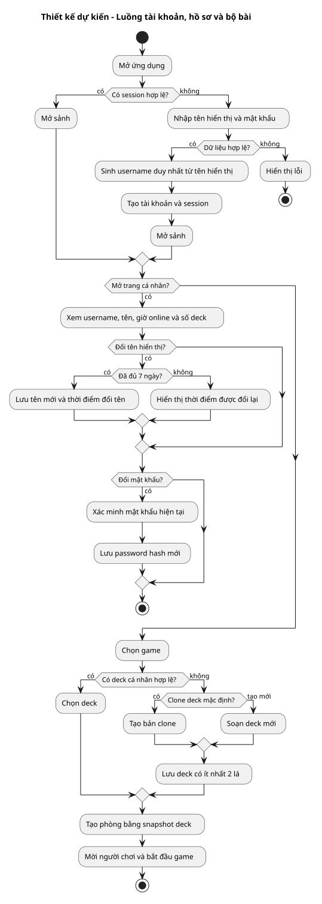
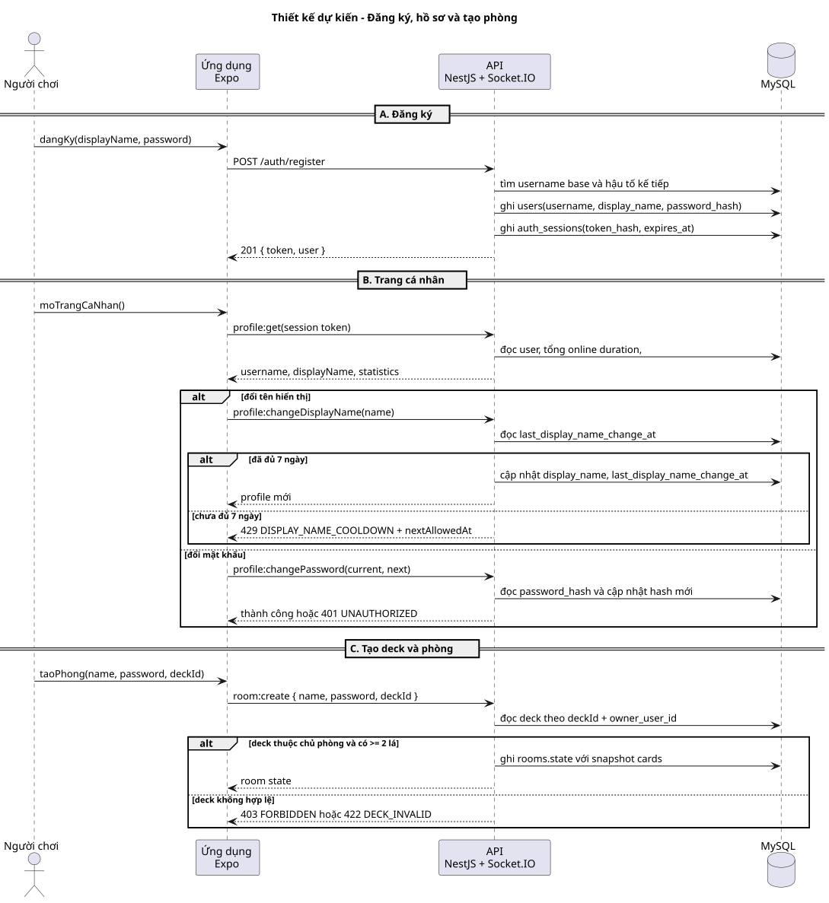
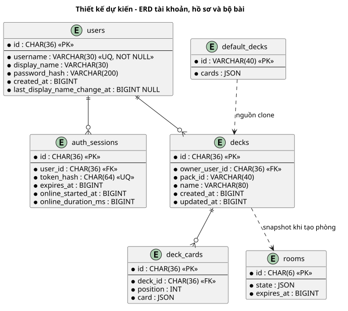

BƯỚC 3 · ĐÃ DUYỆT
Thiết kế dự kiến: tài khoản, hồ sơ và bộ bài cá nhân
Sơ đồ được render bằng PlantUML server local. Room tiếp tục là aggregate realtime độc lập; deck cá nhân chỉ được sao chép vào room tại thời điểm tạo.
Flow chart nghiệp vụ

PlantUML source
Sequence diagram
Username được sinh trong server. Trang cá nhân đọc thống kê từ dữ liệu server; giới hạn đổi tên được kiểm tra tại API, không chỉ ở giao diện.

PlantUML source
ERD
Các bảng mới là users, auth_sessions, decks và deck_cards. Username có unique constraint và không được cập nhật. Session tích lũy thời lượng online để tổng hợp hồ sơ.

PlantUML source
Quyết định thiết kế đã duyệt
- Đăng ký bằng tên hiển thị và mật khẩu; username duy nhất, không rỗng, bất biến do server sinh.
- Hồ sơ hiển thị username, thông tin tài khoản, tổng giờ online và tổng deck.
- Đổi mật khẩu yêu cầu mật khẩu hiện tại; đổi tên hiển thị bị giới hạn một lần mỗi 7 ngày ở server.
- Deck thuộc tài khoản; room dùng snapshot deck để bảo toàn phiên realtime.
- Dev stack chạy liên tục để kiểm tra realtime theo từng mốc code.